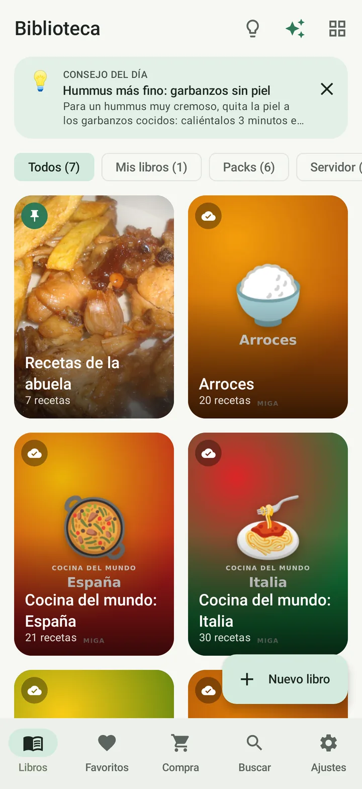
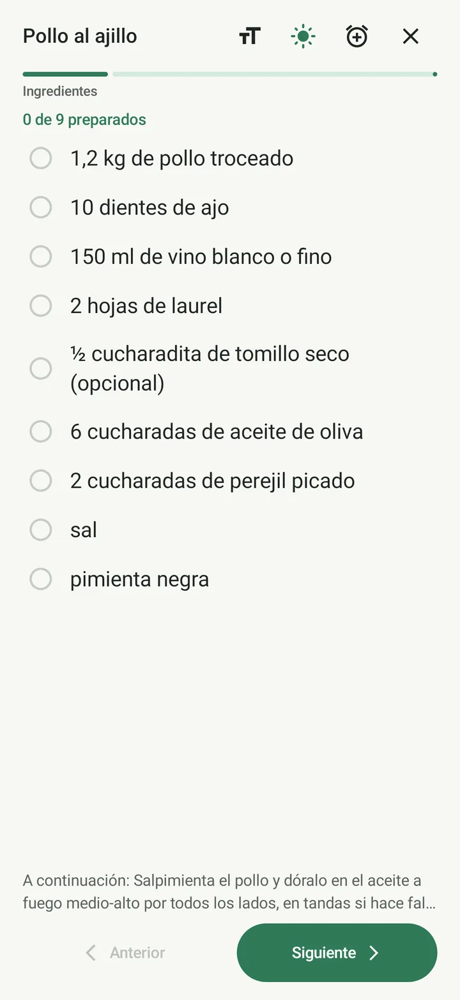
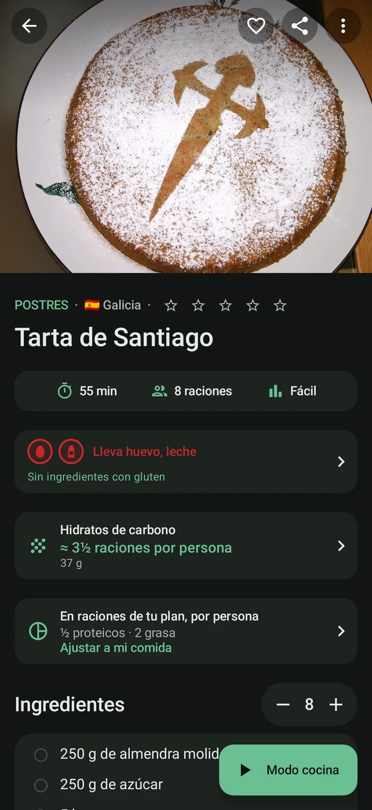

Libros con portada
Organiza las recetas en libros: el de tu madre, el de un amigo o uno por temas.
- Fija tus libros favoritos arriba
- Recetas agrupadas por categoría
- Desliza para pasar de receta como las páginas de un libro
Una app completa para la cocina de casa, explicada sin letra pequeña y con capturas de la app de verdad.
Pantallas de la app tal cual, con recetas de los packs.






Organiza las recetas en libros: el de tu madre, el de un amigo o uno por temas.
Encuentra cualquier receta en todos tus libros por nombre o ingrediente.
Escribir una receta es rápido: pestañas para cada parte y sugerencias de lo que ya has usado.
Recorta, gira y mejora tus fotos, que se guardan con el tamaño justo.
Los pasos en grande y la pantalla siempre encendida.
Desde una receta añades todos sus ingredientes de una vez.
Escanea códigos de barras para añadir productos y ver su ficha.
Trae recetas de donde estén.
Los 14 alérgenos de la ley europea y la lactosa, calculados con los ingredientes.
Para quien cuenta raciones (por ejemplo, con diabetes). Opcional.
Trucos cortos para cocinar mejor, sin conexión.
Comparte una receta o un libro entero en el formato que necesites.
Guarda toda tu biblioteca en un archivo y restáurala cuando quieras.
Que Miga se vea como te gusta.
Tus recetas, solo para ti.
Apúntate a la beta, crea tu primer libro y guarda esa receta que siempre te piden.
Miga está en pruebas en Google Play. Escríbenos desde el correo de tu cuenta de Google y te enviamos la invitación.